Practical first
Start with useful features that can be installed, tested and improved.
An independent garden technology project
What if your garden could do more than look good? Garden Control Centre is a home-built project exploring how simple, effective technology can make outdoor spaces easier to care for, more responsive and more enjoyable.
Garden Control Centre started with a simple question: can accessible, affordable technology help a garden look after itself?
The idea is to connect the physical garden with a small, adaptable control system — beginning with lighting, then building towards sensors, useful insights and eventually more automated care.
This is not an off-the-shelf product or a complicated system for its own sake. It is a home-built project: start simple, make something useful, test it in the real garden, then improve it.
Start with useful features that can be installed, tested and improved.
Choose practical, affordable components and make each part earn its place.
Use real conditions and garden context to inform better decisions.
At the heart of the prototype is a Raspberry Pi. It connects software to physical hardware, giving the project a flexible foundation for controlling lights and reading garden conditions.
The approach is deliberately hands-on: use accessible components, solve real problems and keep the system as straightforward as possible.
Explore the dashboard demo ↗Illustrative system overview based on the current prototype configuration.
This is a home-built project, developed in stages with a simple principle: make useful things work reliably before adding complexity. These are real snapshots of the garden work, lighting tests and electronics.
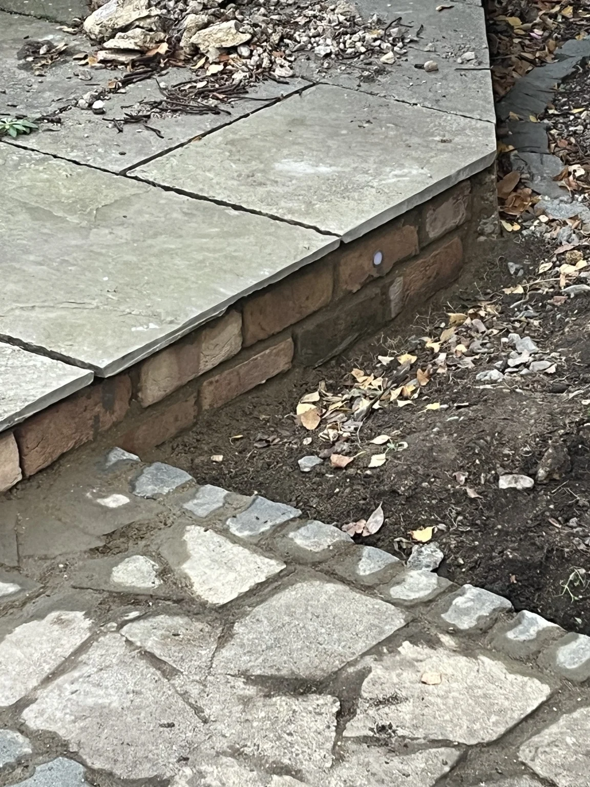
BRICK SLIPS · DAYLIGHTThe brick slips give the old patio edge a warmer finish, with recessed LEDs built into the wall. This daylight view shows how the lights sit within the brickwork before the evening test.
Actual project photograph · brick slips and recessed light.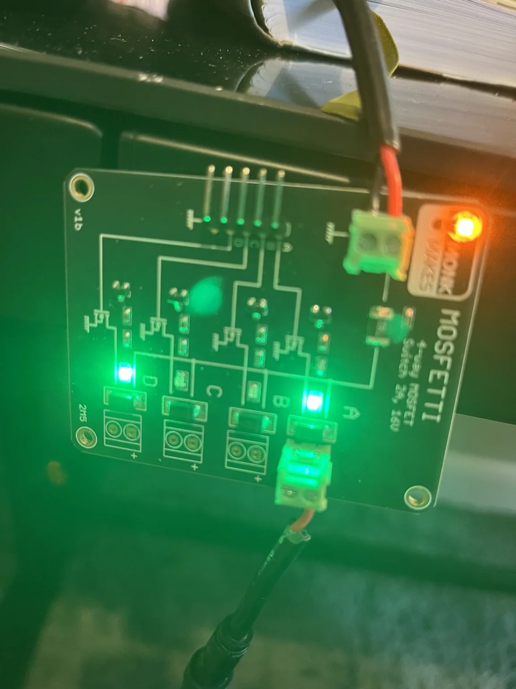
LIGHTING CONTROLA four-channel Mosfetti MOSFET driver connects the controller to the garden lights, allowing the different lighting channels to be switched independently.
Actual project photograph · output channels being tested.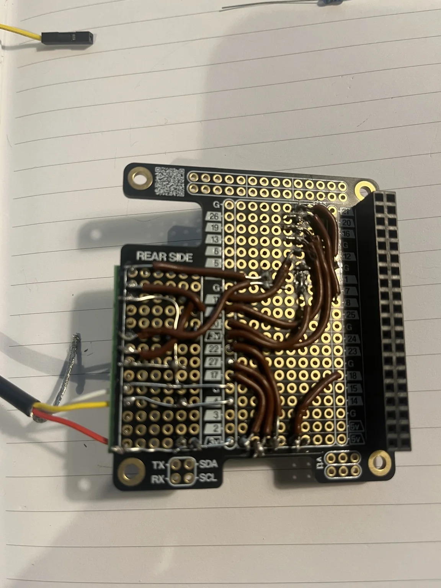
SENSINGThe prototype wiring is being transferred from temporary connections to a more permanent perfboard layout. This is the hands-on work behind making the controller more robust and maintainable.
Actual project photograph · hand-wired prototype board.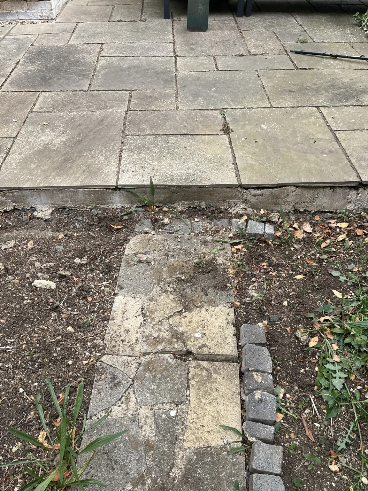
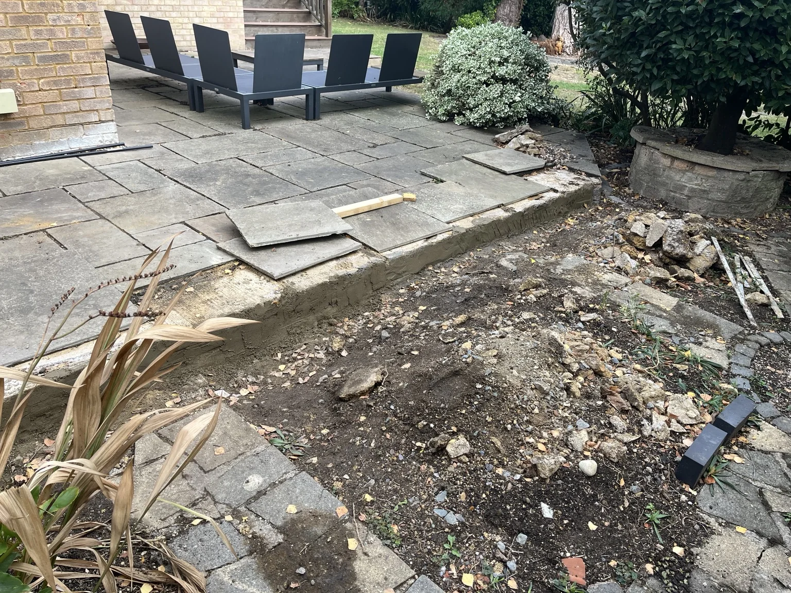
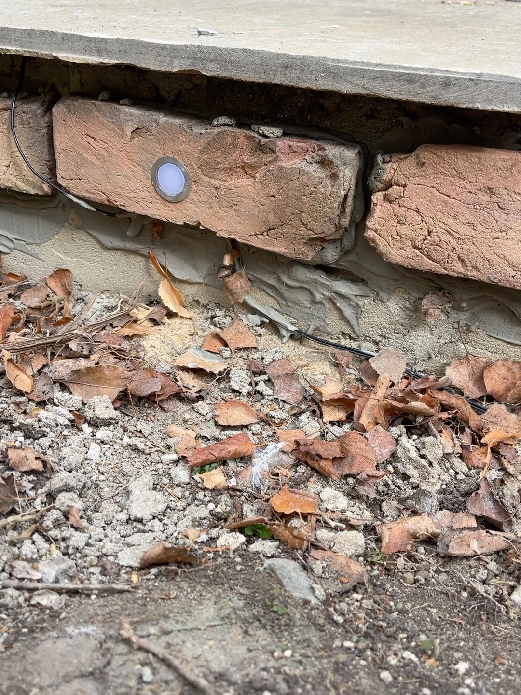
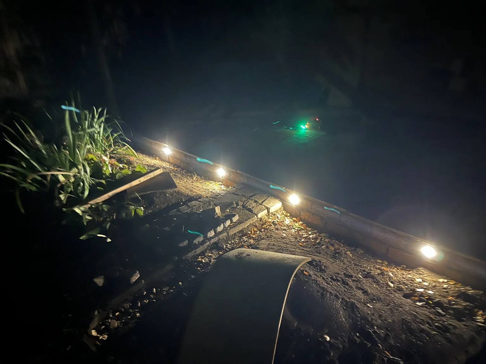
Simple, practical, home-built. The aim is not technology for its own sake. It is to make useful garden features work reliably, learn from real-world tests and add complexity only when it improves the result.
Explore the demo ↗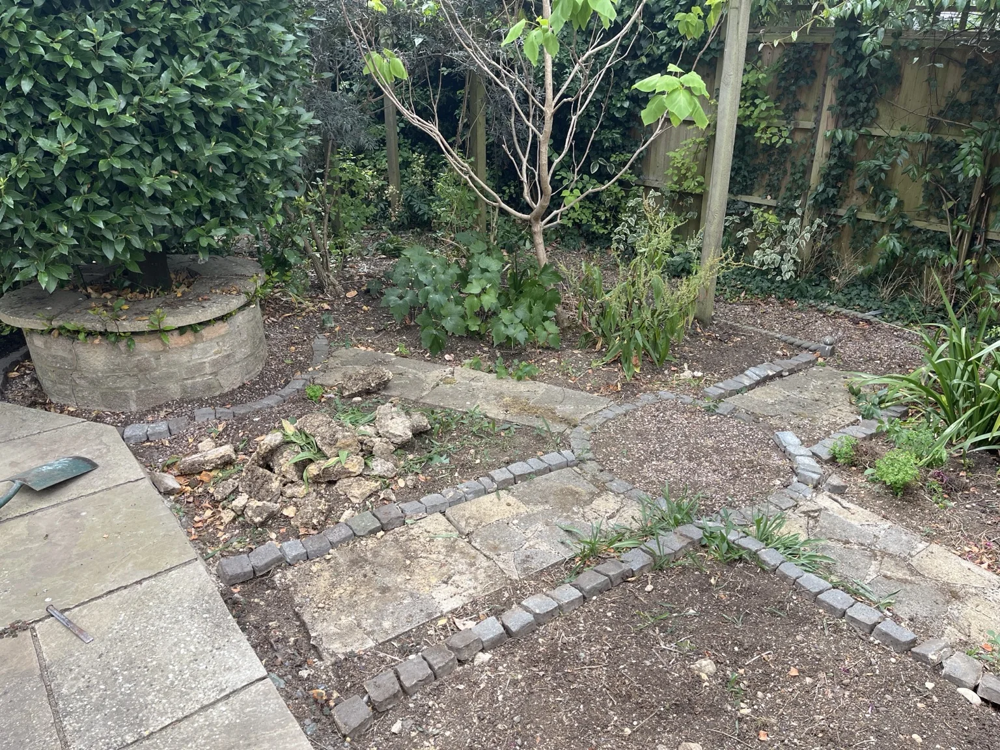
Actual garden · work in progressThe current web app brings garden lighting controls, condition readings, schedules and health insights into a mobile-friendly interface. These are interactive previews of the demonstration interface, with sample readings and simulated controls.
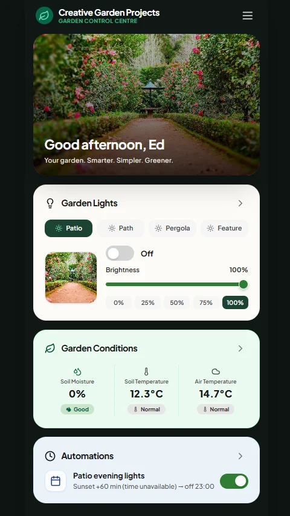
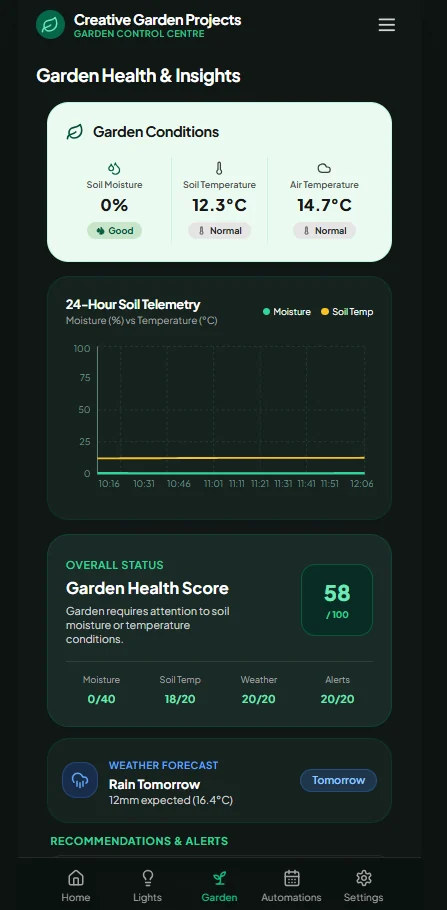
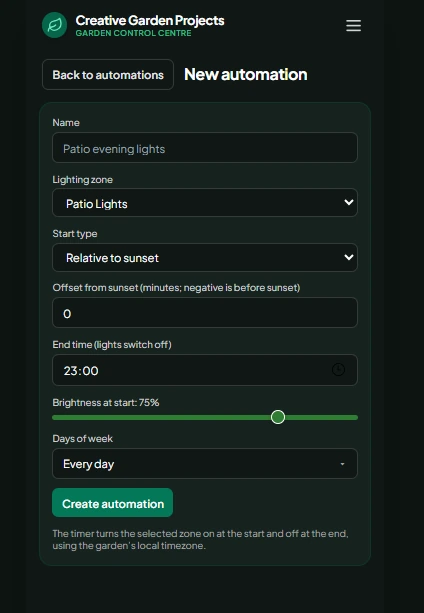
The interface is already taking shape. The wider project is still a prototype: the readings and statuses shown in these screenshots should not be interpreted as proof that every sensor feed, recommendation or automation is fully connected and production-ready.
Some of the core ideas are already in place. The project is evolving from working foundations, with more intelligence, context and confidence built into its decisions over time.
Control different lighting zones, experiment with schedules and build more useful ways to set the scene.
Collect soil-moisture and temperature readings, understand how they change, and make the data useful.
The prototype already uses location-based weather and forecasts alongside soil-moisture readings to assess whether watering may be needed. The next step is to make those decisions more intelligent by weighing more context, learning from results and improving recommendations.
The first mobile-friendly interface is live. Next steps are to refine the experience and strengthen the connection between the dashboard, sensor readings and reliable hardware control.
↳ This is an evolving prototype. Weather-aware watering logic is already being explored in the system; further work will focus on improving the quality of its decisions, validating them against real garden conditions and building reliability over time.
Garden Control Centre is a home-built project that keeps things simple and practical. If you are interested in what is possible when straightforward technology meets a real garden, I would be happy to hear from you.
Questions or interested in the project? Get in touch for a friendly conversation.